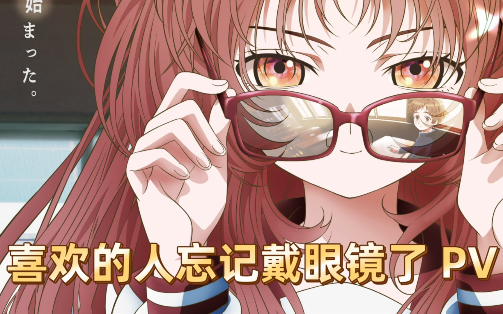
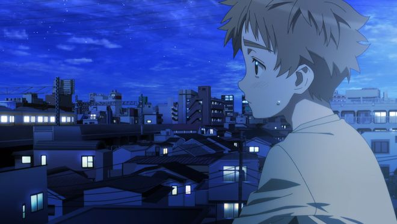
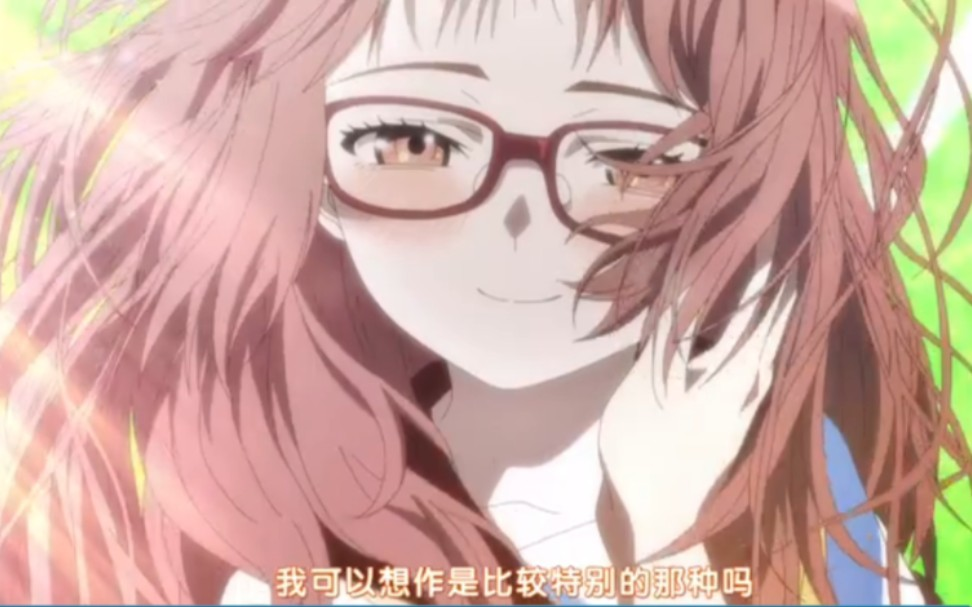

喜欢的人忘记戴眼镜了
剧作品简介:
别称 好きな子がめがねを忘れた
相关作品 同名漫画
制作 GoHands
观看地址 bilibili
邻座的女孩忘记戴眼镜了。
小村同学很想帮帮她，但拼命想看清东西的她，靠得太近了——
在Twitter上引发话题的零距离恋爱喜剧?
备注：在2018年4月，藤近小梅在Twitter上刊出了两卷单篇，每卷4页！
角色介绍:
小村枫
小村枫(小村 楓(こむら かえで)，声：伊藤昌弘) 14岁，本作男主角。是个早熟，容易害羞与胡思乱想的少年。小时候已经知道圣诞老人不存在，愿望清单和生日要的都是记事本和文具，只因不想给母亲。
三重爱
三重爱（三重 あい（みえ あい），声：若山诗音） 14岁，本作女主角。是个单纯，天真与粗心大意的女孩。容易打瞌睡甚至站着也能打瞌睡。喜欢到水族馆看水生物，尤其最喜欢的是水母。
蓝天集团| @123456|申请 桂123456789